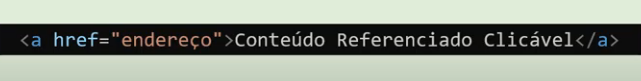

É uma referência dentro de um documento em hipertexto para outras partes do mesmo documento, outros documentos, arquivos ou endereço eletrônico
Os links podem ser remotos, internos. locais, com endereço de correio ou arquivos
A marcação de hiperlinks acontece utilizando a tag < a > e a propriedade href que faz a referência para o conteúdo desejado.
Sintaxe:
São links que referenciam sites ou páginas da web. Na propriedade href utilizamos a URL (Uniform Resource Locator para a referência que desejamos
Sintaxe:
São links que apontama um lugar diferente dentro da mesma página e possibilita acessar fiderentes parágrafos ou seções quando o documento é extenso.
Sintaxe:
São links que apontam para outras páginas dentro de um mesmo site.
Sintaxe:
É possível realizar hiperlinks imagens envolvendo a tag de imagem com a tag de hiperlink
Sintaxe:
São links que apontam para arquivos e possibilitam realizar download destes arquivos.
Sintaxe:
São links que apontam para um endereço eletrõnico
Sintaxe: